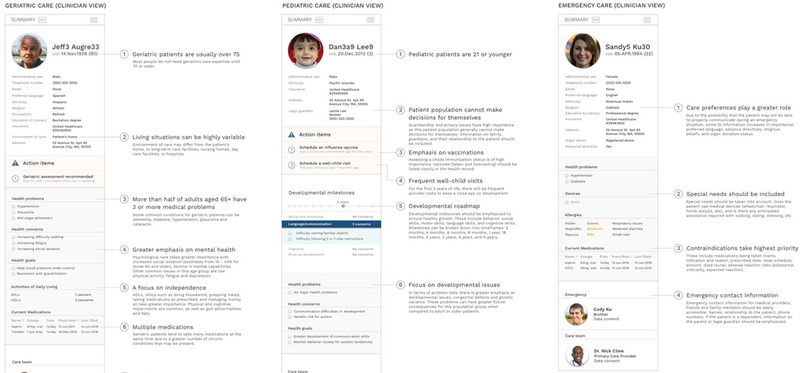
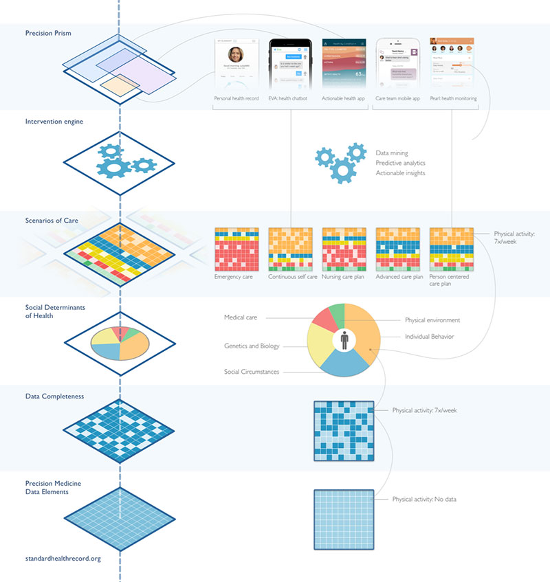
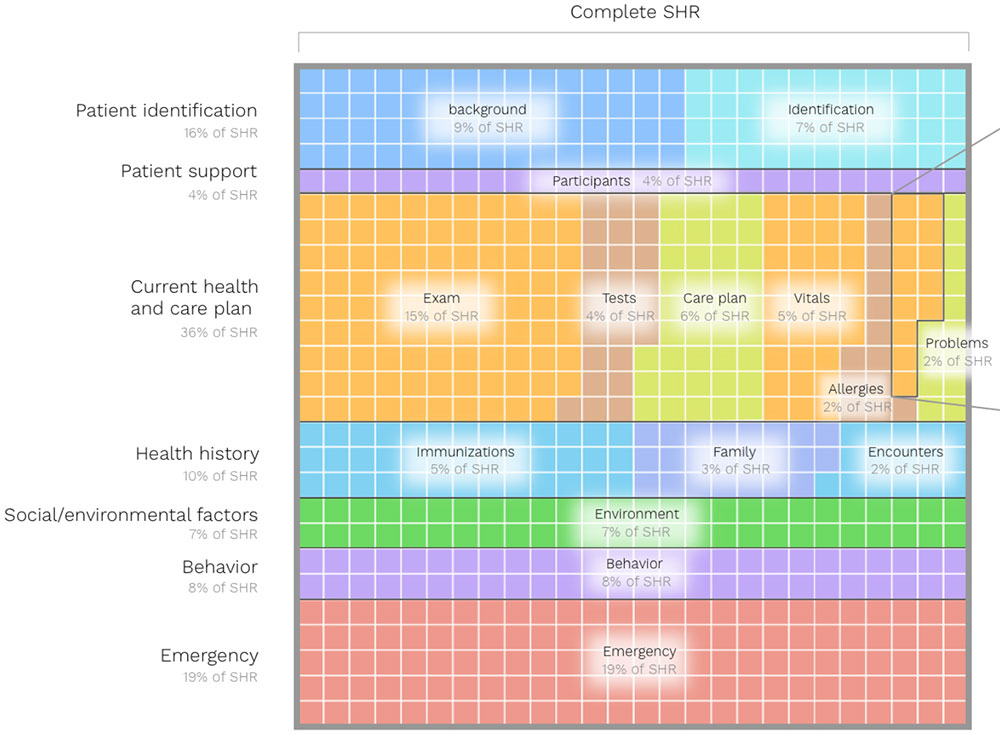
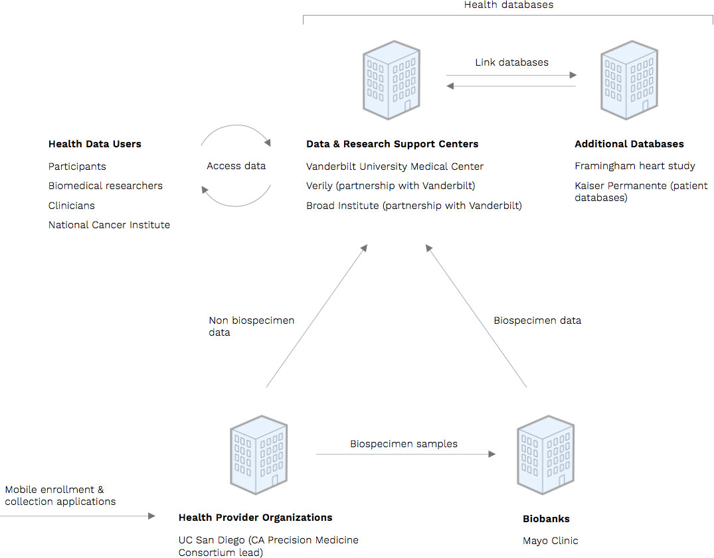

The Precision Prism is constantly being validated by continual feedback from users, organizations, and a panel of experts.
They are to be shared, used, and critiqued to ensure that future precision medicine products are following the best design guidelines.
Concepts for views of the patient summary portion of the health record based on serveral different use cases: geriatric, pediatric, emergency, and self care.

Use CasesConceptual ideas and vision of how the standard health record may be used in the future.
Data Architecture DiagramVisualizing the relationships between the layers of Precision Medicine information.

Determinants of HealthThis diagram is a model of all factors correlated with health outcomes for an individual.
www.determinantsofhealth.org
See how complete or incomplete a person's standard health record is.

Precision Medicine Initiative EcosystemSee who is involved with the PMI, their role, and how they coexist.
